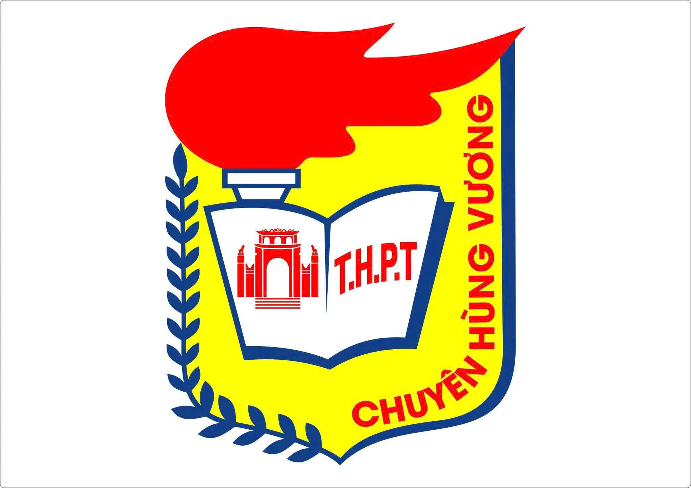
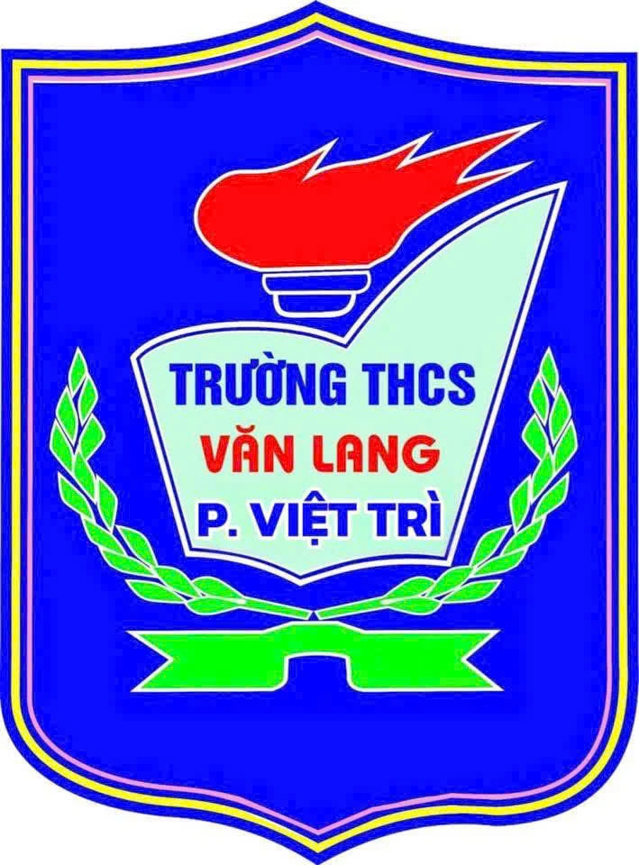

2024 — 2027

Hung Vuong High School for the Gifted
Phu Tho, Viet Nam
Expected graduation June 2027
ABOUT ME
Growing up in Phu Tho, an industrializing province in northern Vietnam, I witnessed how expanding industrial zones transformed the local economy. Seeing new businesses emerge sparked my curiosity about economic growth, investment, and how businesses create opportunities for communities.
This curiosity developed into an interest in economics, finance, and business. I am particularly fascinated by how financial decisions, capital allocation, and business strategies shape markets and drive sustainable economic development. I hope to explore how these fields intersect to create lasting value and meaningful opportunities.
EDUCATION

Hung Vuong High School for the Gifted
Phu Tho, Viet Nam
Expected graduation June 2027

Van Lang Secondary School
Phu Tho, Viet Nam
RESEARCH
Young Adults and Financial Inclusion in Vietnam, 2021–2024
Examines whether Vietnamese youth aged 15–24 narrowed the gap with older adults in account ownership, formal saving, and digital payment use between 2021 and 2024.
LEADERSHIP
Co-Organizer · EmpowerNext
A six-month clean-energy initiative supporting women in Phu Tho to explore renewable energy and non-engineering career paths.
President · English Club, Hung Vuong High School for the Gifted
HONORS & AWARDS
Second Prize · Vietnam Economics Olympiad
National level · Ranked 20th among 1,000+ candidates. Advanced to the IEO Team Selection Round.
Gold Award · Cambridge Economics and Finance Competition
International level · Top 5% among 1,500+ participants.
Bronze Award · Asia Business Simulation
Regional level · Operational Excellence Award; ranked 4th among 52 teams.
PROFILE & SKILLS
Vietnamese National High School Programme
Language Certifications
Python · Excel · Word · PowerPoint
Vietnamese (native) · English (IELTS 8.0)
Microsoft Office Specialist: Excel, Word, and PowerPoint
CURRICULUM VITAE